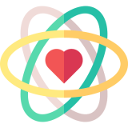

Quem somos?
Somos uma instituição sem fins lucrativos que, através de campanhas, eventos e workshops, busca oferecer apoio gratuito a jovens brasileiros na área de saúde mental
Somos uma instituição sem fins lucrativos que, através de campanhas, eventos e workshops, busca oferecer apoio gratuito a jovens brasileiros na área de saúde mental
Nosso objetivo é ajudar cada vez mais jovens que estão sendo esquecidos pelo governo e sociedade, propondo ações em diversos setores, para que o tema seja discutido e tratado com seriedade Por meio de parcerias, buscamos apoiar jovens em regiões remotas, criar campanhas de conscientização e desenvolver projetos em locais públicos, a fim de difundir conhecimento sobre saúde mental e gerar impacto positivo Assim, em conexão com organizações civis, sociais e empresariais, procuramos criar uma rede de apoio para que cada vez mais pessoas tenham auxílio e incentivo para alcançarem seu melhor potencial

Transparência e coerência em nossas ações

Respeito pela diversidade
Fortalecimento de vínculos

Honestidade, liberdade e autonomia